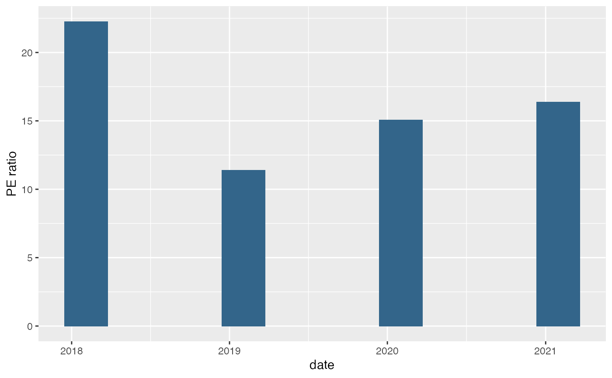
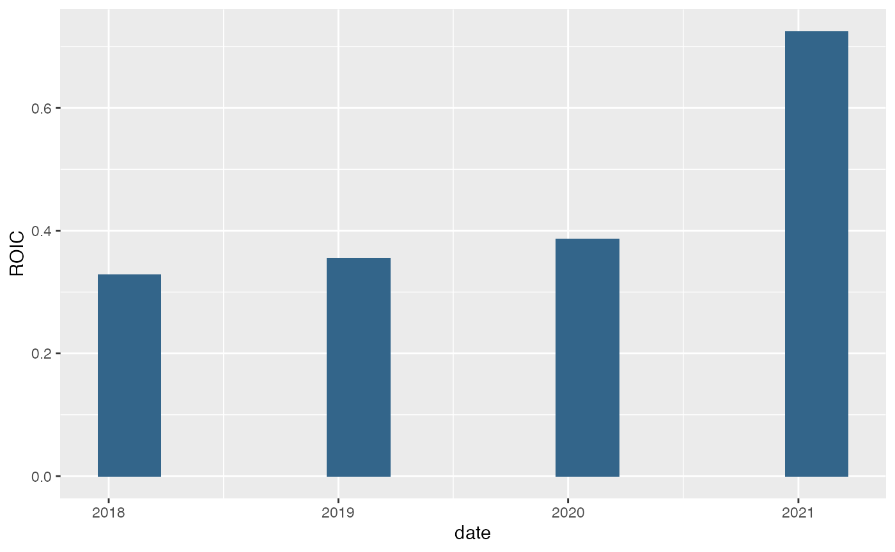
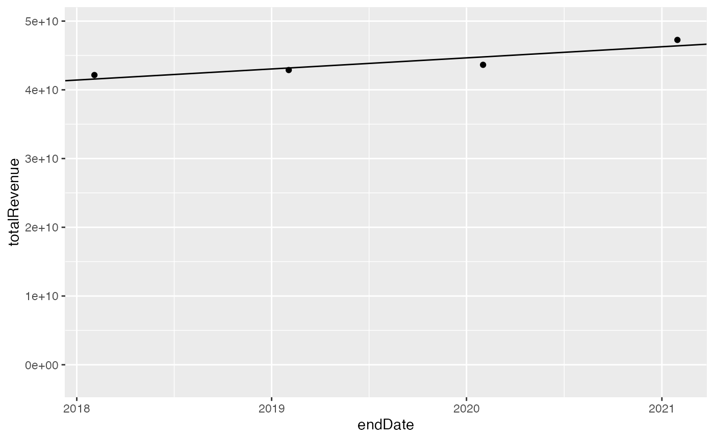
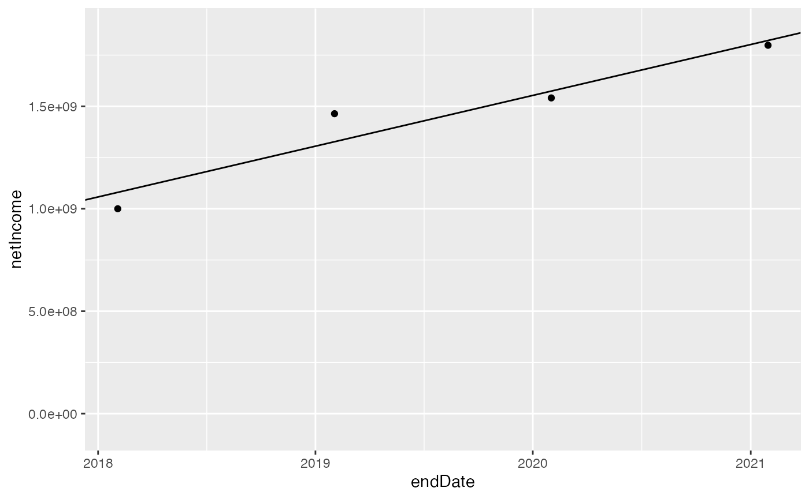
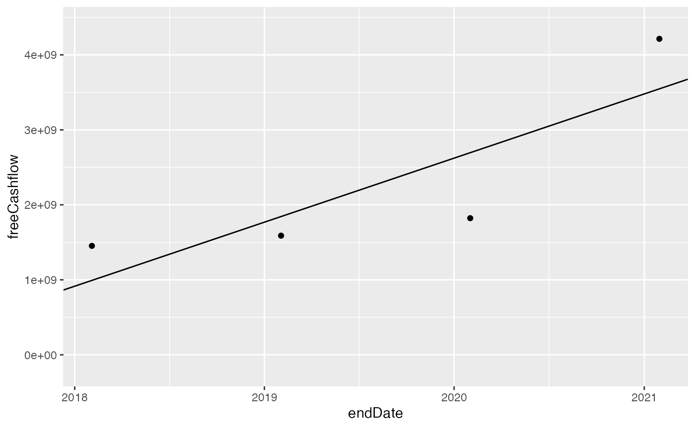
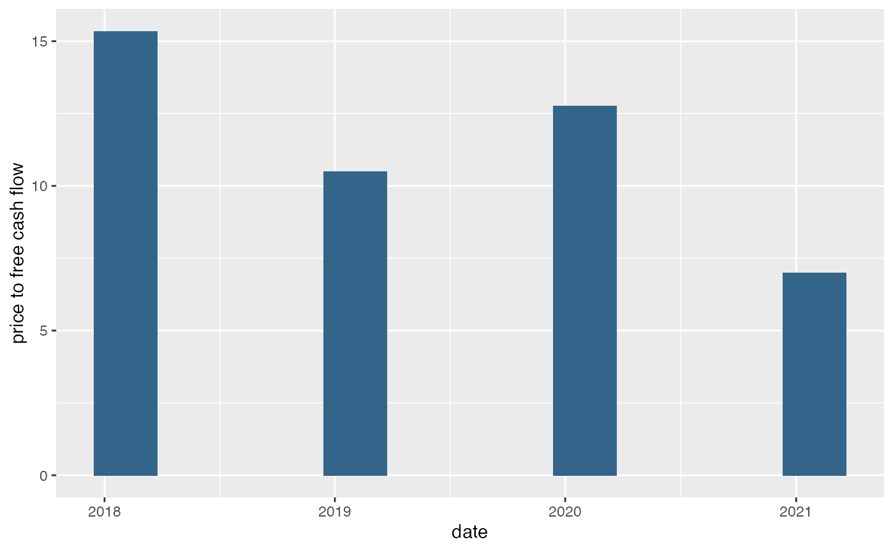

Stock screening using eight criteria
criteria.RmdThe goal of this notebook is to demonstrate stock screening using the following eight criteria:
- PE ratio < 22
- Return on invested capital > 9%
- Revenue growth
- Net income growth
- Shares outstanding decreasing or even
- Long term liabilities / 5 year free cash flow < 5
- Free cash flow growth
- Price to free cash flow < 20
Let’s do this for Best Buy, ticker BBY.
ticker <- "BBY"
fin <- yahoo_financials(ticker)
fin_web <- yahoo_financials_web(ticker)
fin_web## # A tibble: 4 × 5
## endDate basicEps dilutedEps basicAverageShares dilutedAverageShar…
## <dttm> <dbl> <dbl> <dbl> <dbl>
## 1 2021-01-31 00:00:00 6.93 6.84 259600000 263000000
## 2 2020-01-31 00:00:00 5.82 5.75 264900000 268100000
## 3 2019-01-31 00:00:00 5.3 5.2 276400000 281400000
## 4 2018-01-31 00:00:00 3.33 3.26 300400000 307100000PE ratio < 22
For the PE ratio, use the EPS from yahoo_financials_web() and get the price for each of the dates:
price <- fin$endDate %>%
purrr::map(~yahoo_history(ticker, interval = "1d", days = 1, end_date = .)) %>%
bind_rows()
price## # A tibble: 4 × 8
## date open high low close adjusted_close volume symbol
## <dttm> <dbl> <dbl> <dbl> <dbl> <dbl> <dbl> <chr>
## 1 2021-01-29 00:00:00 112. 112. 108. 109. 106. 2481444 BBY
## 2 2020-01-31 00:00:00 86.7 87.0 84.5 84.7 80.4 2841993 BBY
## 3 2019-02-01 00:00:00 59.2 59.2 57.8 58.5 54.0 3784812 BBY
## 4 2018-02-02 00:00:00 72.6 73.0 71.0 71.2 64.1 5040360 BBY
pe_ratio <- price$open / fin_web$dilutedEps
ggplot() +
geom_bar(aes(x = fin$endDate, y = pe_ratio), stat = "identity", fill = "#33658A", width = as.numeric(days(100))) +
xlab("date") + ylab("PE ratio")
This gives us a mean PE ratio of 16.28.
Return on invested capital > 9%
Return on invested capital will be calculated here as cash flow divided by equity + debt. Needs to be checked ⚠️.
roic <- fin$freeCashflow / (fin$longTermDebt + fin$totalStockholderEquity)
ggplot() +
geom_bar(aes(x = fin$endDate, y = roic), stat = "identity", fill = "#33658A", width = as.numeric(days(100))) +
xlab("date") + ylab("ROIC")
This gives us a mean ROIC of 0.45.
Revenue growth
Revenue should be going up, so let’s try a linear regression model.
##
## Call:
## lm(formula = fin$totalRevenue ~ fin$endDate)
##
## Residuals:
## 1 2 3 4
## 8.657e+08 -1.149e+09 -2.989e+08 5.823e+08
##
## Coefficients:
## Estimate Std. Error t value Pr(>|t|)
## (Intercept) -3.608e+10 2.488e+10 -1.451 0.2840
## fin$endDate 5.117e+01 1.589e+01 3.220 0.0844 .
## ---
## Signif. codes: 0 '***' 0.001 '**' 0.01 '*' 0.05 '.' 0.1 ' ' 1
##
## Residual standard error: 1.118e+09 on 2 degrees of freedom
## Multiple R-squared: 0.8383, Adjusted R-squared: 0.7574
## F-statistic: 10.37 on 1 and 2 DF, p-value: 0.08444
ggplot(fin) +
geom_point(aes(x = endDate, y = totalRevenue)) +
geom_abline(slope = coef(mod)[["fin$endDate"]], intercept = coef(mod)[["(Intercept)"]]) +
scale_y_continuous(expand = c(0.1, 0), limits = c(0, NA))
This gives us an annual growth rate of 0.04.
Net income growth
Same procedure as before:
##
## Call:
## lm(formula = fin$netIncome ~ fin$endDate)
##
## Residuals:
## 1 2 3 4
## -23400000 -33300000 136800000 -80100000
##
## Coefficients:
## Estimate Std. Error t value Pr(>|t|)
## (Intercept) -1.084e+10 2.576e+09 -4.210 0.0521 .
## fin$endDate 7.857e+00 1.646e+00 4.774 0.0412 *
## ---
## Signif. codes: 0 '***' 0.001 '**' 0.01 '*' 0.05 '.' 0.1 ' ' 1
##
## Residual standard error: 115700000 on 2 degrees of freedom
## Multiple R-squared: 0.9193, Adjusted R-squared: 0.879
## F-statistic: 22.79 on 1 and 2 DF, p-value: 0.04118
ggplot(fin) +
geom_point(aes(x = endDate, y = netIncome)) +
geom_abline(slope = coef(mod)[["fin$endDate"]], intercept = coef(mod)[["(Intercept)"]]) +
scale_y_continuous(expand = c(0.1, 0), limits = c(0, NA))
This gives us an annual growth rate of 0.17.
Shares outstanding
Shares outstanding should be decreasing or staying the same.
##
## Call:
## lm(formula = fin_web$dilutedAverageShares ~ fin_web$endDate)
##
## Residuals:
## 1 2 3 4
## 4947888 -4537296 -5782629 5372037
##
## Coefficients:
## Estimate Std. Error t value Pr(>|t|)
## (Intercept) 1.002e+09 1.625e+08 6.164 0.0253 *
## fin_web$endDate -4.612e-01 1.038e-01 -4.443 0.0471 *
## ---
## Signif. codes: 0 '***' 0.001 '**' 0.01 '*' 0.05 '.' 0.1 ' ' 1
##
## Residual standard error: 7327000 on 2 degrees of freedom
## Multiple R-squared: 0.908, Adjusted R-squared: 0.862
## F-statistic: 19.74 on 1 and 2 DF, p-value: 0.04711
ggplot(fin_web) +
geom_point(aes(x = endDate, y = dilutedAverageShares)) +
geom_abline(slope = coef(mod)[["fin_web$endDate"]], intercept = coef(mod)[["(Intercept)"]]) +
scale_y_continuous(expand = c(0.1, 0), limits = c(0, NA))
This gives us an annual growth rate of -0.05.
Free cash flow growth
##
## Call:
## lm(formula = fin$freeCashflow ~ fin$endDate)
##
## Residuals:
## 1 2 3 4
## 667100000 -873300000 -254700000 460900000
##
## Coefficients:
## Estimate Std. Error t value Pr(>|t|)
## (Intercept) -4.010e+10 1.918e+10 -2.091 0.172
## fin$endDate 2.708e+01 1.225e+01 2.210 0.158
##
## Residual standard error: 861700000 on 2 degrees of freedom
## Multiple R-squared: 0.7095, Adjusted R-squared: 0.5642
## F-statistic: 4.884 on 1 and 2 DF, p-value: 0.1577
ggplot(fin) +
geom_point(aes(x = endDate, y = freeCashflow)) +
geom_abline(slope = coef(mod)[["fin$endDate"]], intercept = coef(mod)[["(Intercept)"]]) +
scale_y_continuous(expand = c(0.1, 0), limits = c(0, NA))
This gives us an annual growth rate of 0.38.
Price to free cash flow < 20
pfcf <- price$open / (fin$freeCashflow / fin_web$dilutedAverageShares)
ggplot() +
geom_bar(aes(x = fin$endDate, y = pfcf), stat = "identity", fill = "#33658A", width = as.numeric(days(100))) +
xlab("date") + ylab("price to free cash flow")
This gives us a mean price to free cash flow of 11.39.
Bringing it all together
bind_rows(
eight_pillars("BBY"),
eight_pillars("MSFT")
)## # A tibble: 2 × 14
## pe_ratio pe_ratio_ok roic roic_ok revenue_growth revenue_growth_ok
## <dbl> <lgl> <dbl> <lgl> <dbl> <lgl>
## 1 16.3 TRUE 0.449 TRUE 0.0367 TRUE
## 2 35.1 FALSE 0.245 TRUE 0.139 TRUE
## # … with 8 more variables: net_income_growth <dbl>, net_income_growth_ok <lgl>,
## # shares_outstanding <dbl>, shares_outstanding_ok <lgl>, fcf_growth <dbl>,
## # fcf_growth_ok <lgl>, pfcf <dbl>, pfcf_ok <lgl>